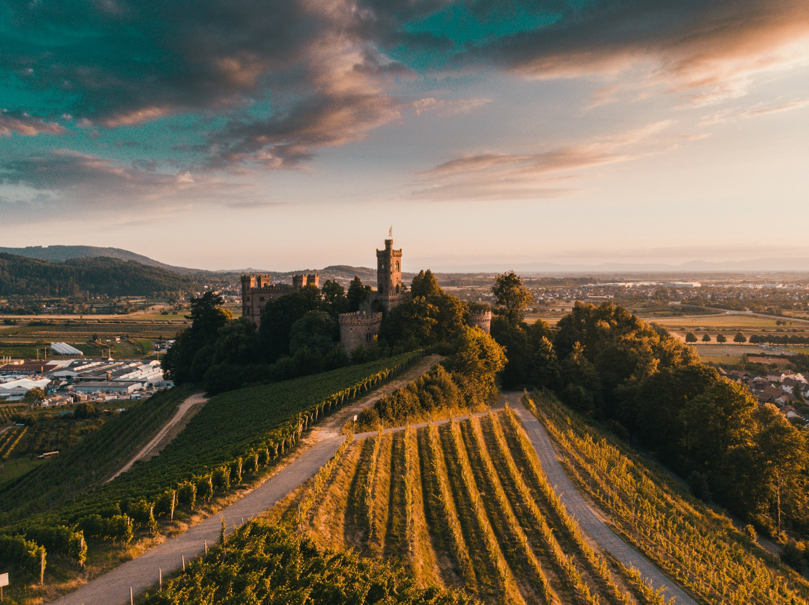

Bringing
A
New
Generation
Of
Wine
To
Missouri
Bringing
A
New
Generation
Of
Wine
To
Missouri
A New Tradition Steeped in Reverence for our Heritage.
Our 60-acre farm in New Haven, Missouri, once produced some of the best wines in the region. During prohibition, the winery closed and the vineyards were removed. In 2016, owner Patricia 1920 began the process of restoring the old farmhouse and vineyards to their former grandeur. The property is now open to the public with an all-season pavilion, event center and guest lodging.
A Love Of Wine And The Land
A Secluded Getaway in the Missouri River Valley.
We serve more than unique and enticing wines. Our experiences are just as delicious. McKelvey Vineyards offers exclusive dinners, exciting day trips, fascinating tours, and weekend getaway packages that you won’t find anywhere else.
Scroll
Down

1920
Wine
In the year 2000, amidst the lush vineyards of the rolling countryside, a group of passionate winemakers embarked on a journey to create something truly exceptional. With meticulous care and unwavering dedication, they nurtured each vine, tenderly coaxing forth the rich flavors that would come to define their wines.
As the seasons turned and the grapes ripened under the golden sun, the winemakers worked tirelessly, their hands stained purple with the promise of greatness. With each harvest, they carefully selected the finest fruits, handpicking only those that held the perfect balance of sweetness and acidity. In their rustic cellars, barrels of oak stood sentinel, patiently waiting to cradle the precious liquid that would soon fill them. With expert skill and centuries-old techniques passed down through generations, the winemakers poured their hearts and souls into every fermentation, allowing nature to weave its magic and transform humble grapes into liquid gold.


Today, as the legacy of that small winery lives on, its wines continue to delight and inspire, a testament to the enduring power of craftsmanship and the timeless beauty of the vine. And as glasses are raised in celebration around the world, the story of these wines, born in the year 2000, remains a testament to the enduring power of the human spirit and the simple joys that can be found in a bottle of wine.